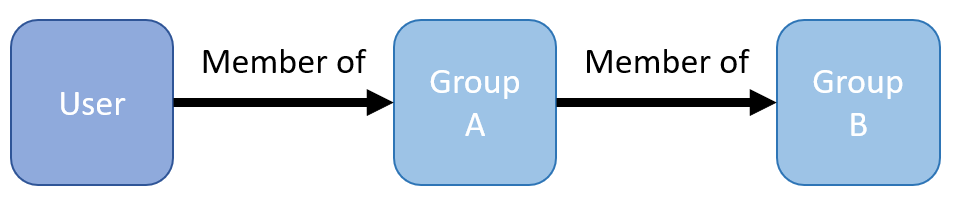
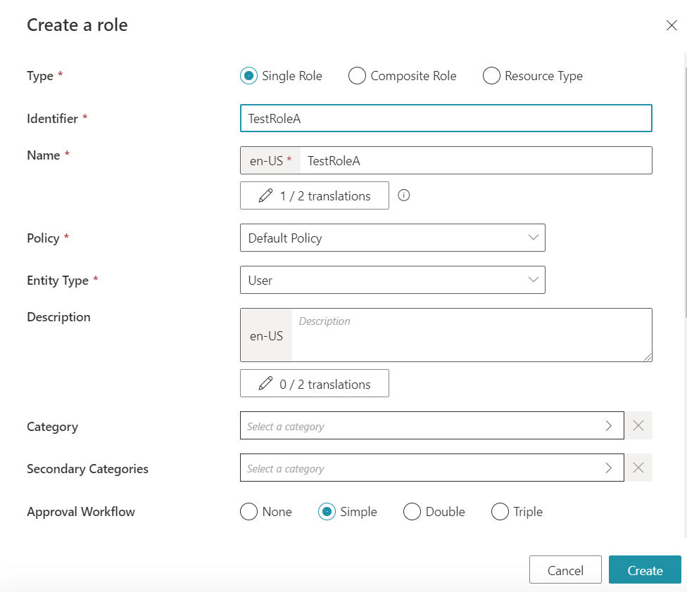
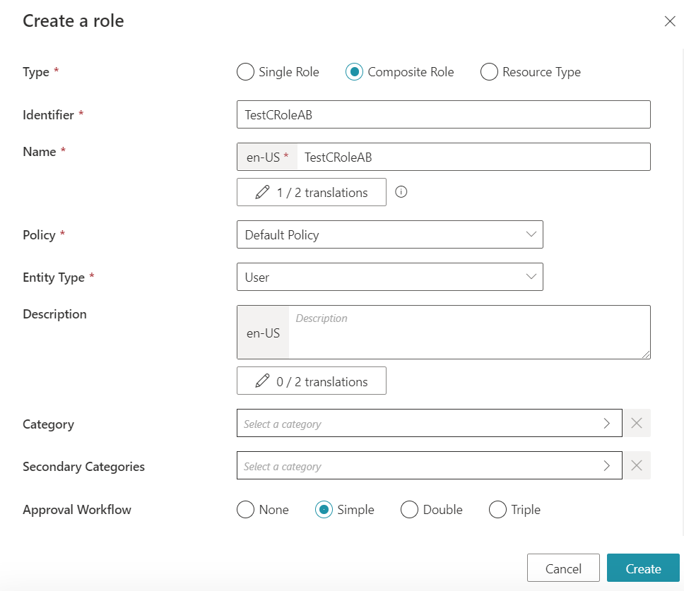
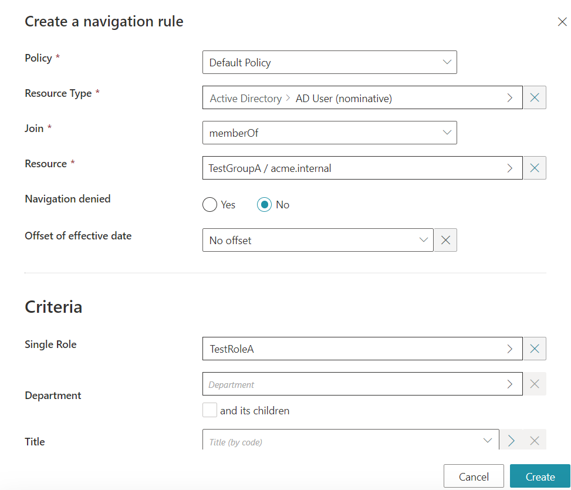
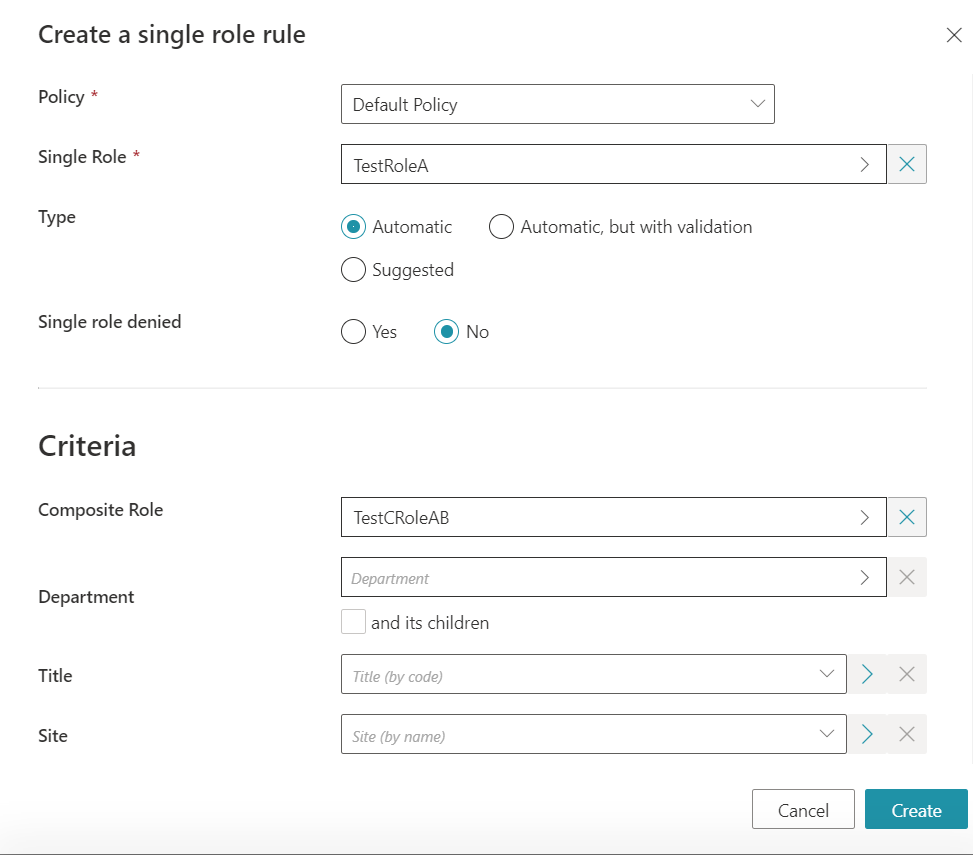
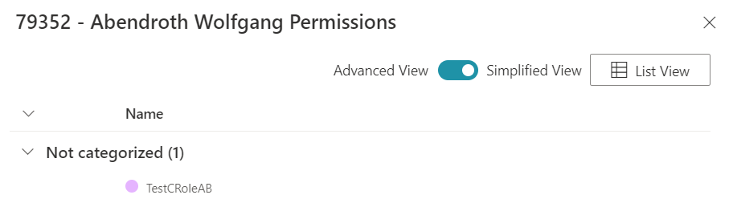
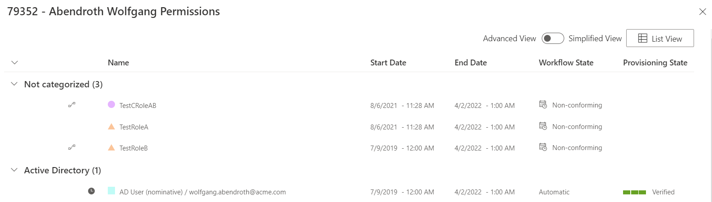
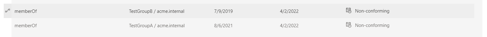

Configure Indirect Permissions
The following how-to assumes that you have already read the topic on Indirect Permissions .
Configure Indirect Permissions in an Active Directory
Configure an indirect resource rule
Configuring an Indirect Resource Rule in the Identity Manager Configuration is the only step needed to set up Indirect Permissions and can be done by answering the following questions:
-
What is the target Entity Type? There are multiple multiple Entity Types but for this example we will choose
AD User (nominative). Another rule can be written if you want to handle Indirect Permissions forAD User (administration). -
Which permissions can be obtained transitively in the Active Directory? Users get permissions by being members of a group. The property is
memberOf. -
Do we want to look for correspondences in another system? Here, we do not want to. This also means that
Correspondence,CorrespondenceMembershipProperty, andEntitlementwill remain blank.
Finally, if we compile all this information and using the naming of the standard Identity Manager Demo, we get the following Indirect Resource Rule:
<IndirectResourceRule
ResourceType="AD_Entry_NominativeUser" Property="memberOf" />
After adding this rule to the Configuration, do not forget to deploy the configuration.
Set up a test user
The aim of this section is to give you a step-by-step guide for setting up a test user. It will also cover what is displayed in Identity Manager. In this example, we will assign a Test Group A directly to the test user and the Test Group A will also be a member of the Test Group B. This way, the test user will also have an indirect assignment to the Test Group B. We will also create the corresponding roles.

A running Active Directory instance is required to reproduce these steps yourself.
Edit the Active Directory
Create two groups in your Active Directory, TestGroupA and TestGroupB. Then add TestGroupA as a member of TestGroupB. Finally add a test user as a member of TestGroupA. The test user can be any existing user in the AD that is known by Identity Manager.
Prepare Identity Manager
Since we have manually edited the Active Directory, we first need to run an AD synchronization job.
Then we create one Single Role for each group in the Active Directory. We will name them TestRoleA and TestRoleB for Directory > User, :

We will also create a test Composite Role to showcase indirect Composite Roles. We will name it TestCRoleAB:

Then we will also need to add some rules. We first need to add one Navigation Rule for each group to link them with their respective Single Role:

And finally, we need to add Single Role Rules to link our two previously created Single Roles to the new Composite Role:

Even if two rules of a kind are needed, only one is pictured. Do not forget the other one.
Indirect permission display
After running a Compute Role Model Task , Indirect Permissions should now appear for your test user.
The next screenshots were taken after adding the direct assignment directly inside the Active Directory. As such, the direct permission is also flagged as Non-conforming.
If you first go on the View permissions tab of your test user, the only new role that appears in the Simplified view is the indirect Composite Role TestCRoleAB:

To display Indirect Permissions, you need to switch over to the Advanced view. TestRoleA and TestRoleB should then appear:

You can also directly display the Assigned Resource Navigations by clicking on AD User (nominative). The memberOf properties will appear in the list:

Configure Indirect Permissions in an Microsoft Entra ID
We can follow the same steps to configure this new rule:
-
What is the target Entity Type? Once again, we will configure a rule for nominative users. The Entity Type is
MicrosoftEntraID_DirectoryObject_NominativeUser. -
Which permissions can be obtained transitively in the Microsoft Entra ID (formerly Microsoft Azure AD)? Users get permissions by being members of a group. The property is
memberOf. -
Do we want to look for correspondences in another system? Here, we do not want to (it is possible, but it is not the aim of this How-To). This also means that
Correspondence,CorrespondenceMembershipProperty, andEntitlementwill remain blank.
Finally, if we compile all this information and using the naming of the standard Identity Manager Demo, we get the following Indirect Resource Rule:
<IndirectResourceRule
ResourceType="MicrosoftEntraID_DirectoryObject_NominativeUser" Property="memberOf" />
Configure Indirect Permissions in SharePoint using Correspondences from an Microsoft Entra ID
We can follow the same steps to configure this new rule, but this time we will showcase the correspondence feature:
-
What is the target Entity Type? We first start in the Microsoft Entra ID. Once again, we will configure a rule for nominative users. The Entity Type is
MicrosoftEntraID_DirectoryObject_NominativeUser. -
Which permissions can be obtained transitively in the Microsoft Entra ID? Users get permissions by being members of a group. The property is
memberOf. -
Do we want to look for correspondences in another system? Yes, we want to find correspondences in SharePoint. A correspondence can be found using the
SharePointObjectproperty. -
Which permissions can be obtained transitively in SharePoint? Once again, users get permissions based on which groups they are a member of. The property capturing this notion for SharePoint entities is
Group -
Is being member of a group in SharePoint the type of permissions that we want to capture? While this can be computed, we are rather interested in compiling which SharePoint objects a user can view/change/etc. We obtain this information using the
Entitlementproperty.
Finally, if we compile all this information and use the naming convention of the standard Identity Manager Demo, we get the following Indirect Resource Rule:
<IndirectResourceRule
ResourceType="MicrosoftEntraID_DirectoryObject_NominativeUser" Property="memberOf" Correspondence="SharePointObject" CorrespondenceMembershipProperty="Group" Entitlement="Entitlement" />
This rule will also compute indirect permissions for the Microsoft Entra ID.